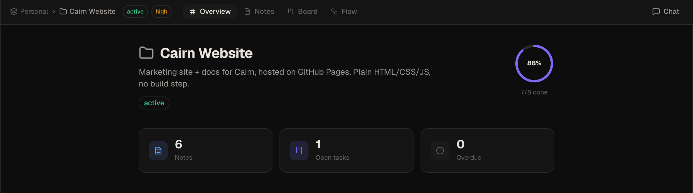

Getting Started
Install Cairn, choose a workspace folder, create your first project, and connect an AI endpoint. This page gets you from zero to working in a few minutes.
What is Cairn?
Cairn is a local-first project management application that runs on your machine. It combines a markdown notes editor, a kanban board, and an AI chat panel into a single desktop app. All data is stored as a SQLite database and plain .md files in a folder you choose — nothing is sent to external servers by Cairn itself.
Key properties:
- No account or sign-up required
- No cloud storage — your data stays on your machine
- Works completely offline (AI features require a local or remote endpoint you configure)
- Plain markdown files you can read and edit outside Cairn
- Bundled MCP server for connecting external AI clients
System requirements
- macOS 12 Monterey or later
- Windows 10 or later (x64)
- Linux (x64, AppImage or deb)
- ~150 MB disk space
Download & install
- Go to the Releases page on GitHub
- Download the installer for your platform:
.dmgfor macOS ·.exefor Windows ·.AppImageor.debfor Linux - Open the installer and follow the standard install flow for your OS
- Launch Cairn
First launch: choosing a workspace
On first launch, Cairn will prompt you to choose a workspace folder. This is the root directory where all your data will live:
- A
cairn.dbSQLite database - A
notes/folder containing one.mdfile per note, organised by project
You can choose any folder — a new empty folder, an existing folder, or a folder inside iCloud Drive, Dropbox, or a git repository for automatic portability and backup.
You can change the workspace folder later in Settings → Workspace.
Creating your first project
- In the left sidebar, click the + button next to Projects
- Enter a project name and choose an icon
- Click Create
The project opens to the Overview tab. Each project has four tabs: Overview, Notes, Board, and Flow. The five default board columns — Backlog, Todo, In Progress, Review, Done — are created automatically.

Creating a note
- Select your project in the sidebar
- Click Notes in the top nav
- Click the + button to create a new note
- Type in the editor — it renders markdown live in the split pane
The note is saved as notes/<Project>/<Title>.md in your workspace folder immediately.
Editor features
- Syntax highlighting for 100+ languages in fenced code blocks
- Mermaid diagrams render inline — flowcharts, sequence diagrams, ER diagrams, Gantt charts, and any diagram type supported by Mermaid v11. Click the ⤢ icon on any diagram to open it full-screen.
- Table of contents auto-generated from headings — click any entry to jump to that section
- AI text actions on any selection: Rephrase, Summarize, Expand, Fix Grammar, Change Tone, Custom
- Pin notes to the top of the list
- External edits to the
.mdfile sync back automatically via file watcher
Creating a task
- Select your project and click Board
- Click + Add card at the top of any column
- Enter a title. Optionally add a description, priority, and due date.
- Press Enter or click outside to save
Drag cards between columns to move them through your workflow.

Board features
- WIP limits — set a maximum card count per column. When the limit is hit, the column header badge turns amber and new cards can't be added via the UI. Cards can still be moved in by dragging.
- Archive — right-click any card → Archive. Archived cards collapse into a hidden section at the bottom of the column. Click to expand, then restore to move a card back to active.
- Column customisation — add columns with the
+button at the right of the board, rename by double-clicking the header, reorder by dragging the grip handle, or delete via the⋯menu. - Context menu — right-click any card to archive or delete without opening the card detail.
Using Idea Flow
Each project has a Flow tab alongside Notes and Board. Idea Flow is a freeform canvas where you can arrange ideas spatially, link them to existing notes and tasks, and explore connections before committing to structure.
- Double-click the canvas to create an idea node
- Drag from any node handle to create an edge between nodes
- Drag notes or tasks from the sidebar panel onto the canvas to create reference nodes
- Right-click any node to promote it to a board task, summarise its upstream subgraph with AI, or delete it
- Click Auto-layout in the toolbar to arrange nodes automatically
For the full reference — node types, group nodes, AI Summary, MCP tools, and keyboard shortcuts — see Idea Flow.
Connecting an AI endpoint
Cairn works with any OpenAI-compatible API endpoint. You can use a remote service or a local model.
Using OpenAI
- Open Settings → AI & Chat
- Set the endpoint to
https://api.openai.com - Enter your OpenAI API key
- Choose a model (e.g.
gpt-4o)
Using Ollama (local, no API key)
- Install Ollama and pull a model:
ollama pull llama3.2 - In Cairn, go to Settings → AI & Chat
- Set endpoint to
http://localhost:11434 - Leave the API key blank
- Enter the model name, e.g.
llama3.2
Using LM Studio (local, no API key)
- Open LM Studio and start the local server (default: port 1234)
- In Cairn, set endpoint to
http://localhost:1234 - Leave the API key blank
- Enter the model name shown in LM Studio
Once configured, open the chat panel with ⌘/ (macOS) or Ctrl+/ (Windows/Linux) and send your first message.
Customising the app
A few settings worth knowing about in Settings → General:
- Theme — Light, Dark, or System (follows your OS preference)
- Font size — scale the UI from XS to XL. The preference persists across sessions.